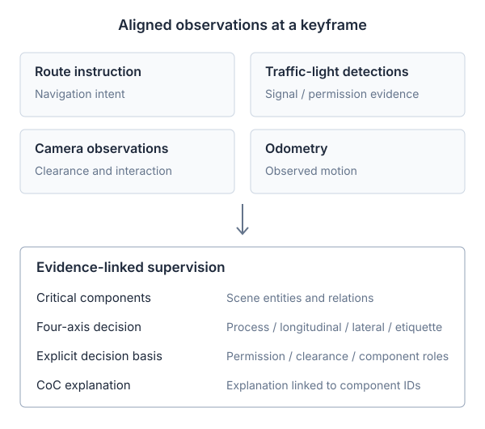
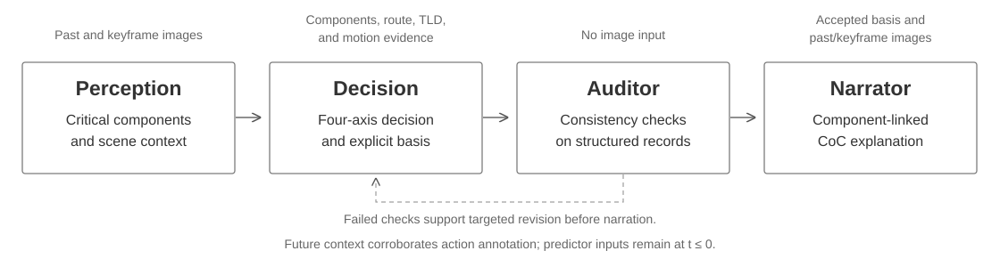
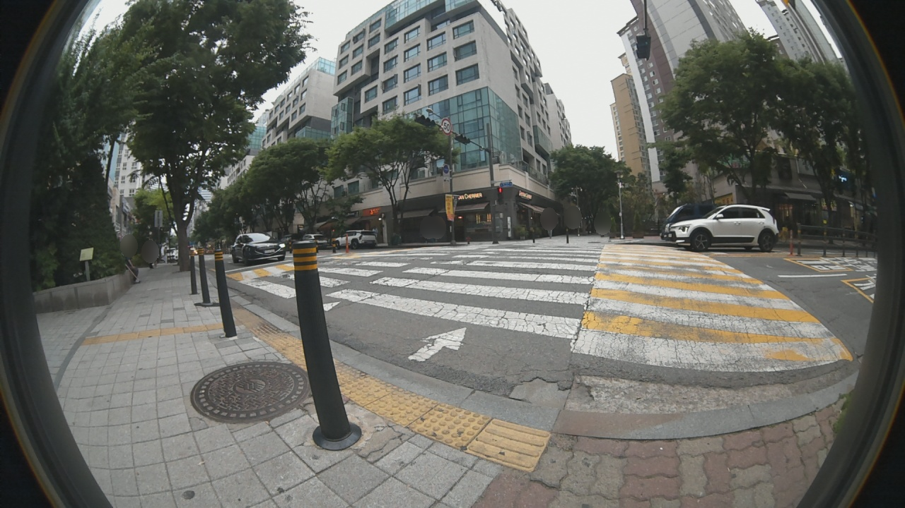
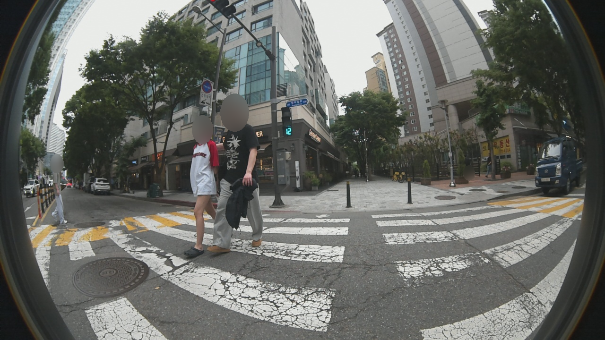
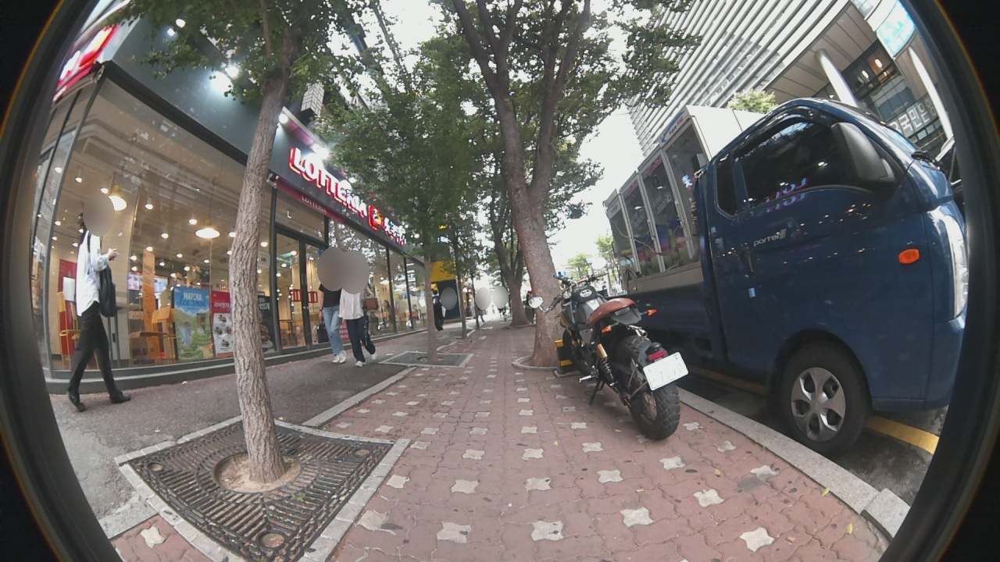
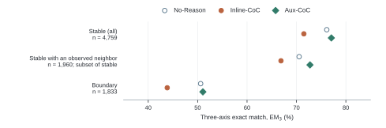

RoDAS: Evidence-Linked Decision Annotations for Sidewalk Robot Navigation
Abstract
Outdoor mobile robots must interpret traffic rules and implicit social conventions when deciding whether to proceed, slow down, or yield. We introduce RoDAS (Robot Decision Annotation Schema) and a pipeline that uses vision-language models (VLMs) to generate evidence-linked annotations from raw sidewalk and crosswalk robot logs. The schema links critical scene components, explicit decision conditions, four-axis actions, and component-referenced Chain-of-Causation (CoC) explanations. The pipeline aligns route instructions, traffic-light information, front-camera observations, and wheel odometry, then generates and checks annotations in stages. We apply it to 74,359 keyframes and compare decision-only training with explanations learned as auxiliary targets or generated before decisions across five VLM backbones. On Cosmos-Reason2-8B, decision-only fine-tuning raises three-axis exact match from 39.55% to 69.04% on held-out places. Auxiliary supervision provides no established gain over decision-only training on this backbone. Replacing training explanations with those from other scenes with different decision conditions, while retaining action labels, leaves auxiliary-model accuracy nearly unchanged after retraining despite reduced agreement between generated explanations and recorded evidence. The linked records reveal errors near recorded label changes and subtle temporal, spatial, and motion-magnitude distinctions in action labels. For decision-only models of the same backbone, three-seed mean exact match is 50.6% near label changes versus 76.1% in stable regions. RoDAS supports the study of explanation–decision consistency and the diagnosis of both prediction failures and ambiguous action annotations.
Key Contributions
- Evidence-linked annotation. A staged VLM pipeline aligns multimodal robot logs and records scene components, four-axis decisions, their governing conditions, and component-linked explanations.
- Learning robot decisions. Fine-tuning improves decision and component prediction. Decision-only, inline, and auxiliary supervision are compared across five VLM backbones.
- Diagnosing prediction errors. Linked records expose errors near observed label changes, under different decision conditions, and on uncommon actions, while separating decision correctness from explanation agreement.
From Robot Logs to Supervision
The same stop or slowdown can reflect a red signal, an occupied path, or yielding to a pedestrian. Observed motion alone leaves these conditions implicit.
RoDAS (Robot Decision Annotation Schema) links critical scene components, a four-axis action, an explicit decision basis, and a component-referenced Chain-of-Causation (CoC) explanation. Permission and corridor clearance are recorded separately, alongside the components and conditions governing the decision.


Evidence-Linked Annotation
Perception identifies critical components from past and current observations. Decision assigns four-axis labels and their governing conditions. The image-free Auditor checks consistency and can request targeted revisions. Narrator writes a component-linked CoC from the approved record.
Only the Decision stage may inspect future images to corroborate the action. Conditions used to justify it must be observable by t = 0. Annotation context contains 17 slots over [−2, +6] seconds; the predictor receives only five slots over [−2, 0] seconds.
Annotated Corpus
We annotate logs collected by a teleoperated four-wheeled robot in Seongnam, South Korea. Repeated sidewalk and crosswalk routes cover a connected street network of approximately 1.4 × 0.4 km.
| Recorded runs / routes / days | 115 / 19 / 13 |
|---|---|
| Duration / travel distance | 12.7 hours / 46.2 km |
| Keyframes after preprocessing | 74,359 |
| Annotation context | 17 slots; [−2, +6] s at 2 Hz |
| Model observations | 5 slots; [−2, 0] s |
| Main test set | 6,592 frames; 9 unseen places |
| Uncertainty clusters | 60 place × run groups |
Four-axis decision vocabulary
| Process (5) | Navigate sidewalk; approach crosswalk; wait for next green; wait for a safe gap; navigate crosswalk. |
|---|---|
| Longitudinal (4) | Maintain speed; accelerate; decelerate; stop for constraint. |
| Lateral (4) | Keep path; nudge left; nudge right; adjust heading. |
| Etiquette (6) | None; keep pedestrian distance; give way to oncoming pedestrian; let pedestrian pass; stay behind pedestrian; wait in queue. |
Process describes the navigation phase at t = 0. Longitudinal and lateral labels capture the first sustained action within a two-second decision window; etiquette records the social interaction separately. These are categorical targets.
Annotation Examples
The annotations preserve different conditions behind similar observed actions.


stop_for_constraint, with different process and etiquette labels.
These are stored annotation targets, not model predictions. The two stopping examples are moments from the same run, not a controlled counterfactual pair. “Clear” refers to the annotated corridor, not an empty roadway.
Inspect aligned observations and keyframe labels
Each record remains fixed at t = 0 while the timeline changes the displayed observation.
Crossing permission and pedestrian occupancy
Past and keyframe observations are model inputs. Future observations are annotation context only.
| Process | navigate_crosswalk |
|---|---|
| Longitudinal | decelerate |
| Lateral | keep_path |
| Etiquette | let_pedestrian_pass |
| Permission | granted |
| Clearance | blocked |
The annotation is fixed at t = 0. Component IDs are local to this keyframe.
Waiting for crossing permission
Past and keyframe observations are model inputs. Future observations are annotation context only.
| Process | wait_for_next_green |
|---|---|
| Longitudinal | stop_for_constraint |
| Lateral | keep_path |
| Etiquette | None |
| Permission | blocked |
| Clearance | clear |
The annotation is fixed at t = 0. Component IDs are local to this keyframe.
Letting pedestrians pass
Past and keyframe observations are model inputs. Future observations are annotation context only.
| Process | navigate_crosswalk |
|---|---|
| Longitudinal | stop_for_constraint |
| Lateral | keep_path |
| Etiquette | let_pedestrian_pass |
| Permission | granted |
| Clearance | blocked |
The annotation is fixed at t = 0. Component IDs are local to this keyframe.
Physical constraints and pedestrian interaction
Past and keyframe observations are model inputs. Future observations are annotation context only.
| Process | navigate_sidewalk |
|---|---|
| Longitudinal | stop_for_constraint |
| Lateral | keep_path |
| Etiquette | give_way_to_oncoming_pedestrian |
| Permission | not_applicable |
| Clearance | blocked |
The annotation is fixed at t = 0. Component IDs are local to this keyframe.
Learning Robot Decisions
We compare decision-only training (No-Reason), free-form CoT before decisions (Inline-CoT), component-linked CoC before decisions (Inline-CoC), and separate decision and explanation tasks with shared parameters (Aux-CoC). Inline-CoT targets are regenerated from CoC. Aux-CoC emits only a decision at decision time; its explanations are evaluated with a separate probe.
Decision-only fine-tuning on Cosmos-Reason2-8B raises three-axis exact match from 39.55% to 69.04% on 6,592 frames from nine unseen places.
| Supervision | EM3 ↑ | Joint ↑ |
|---|---|---|
| Zero-shot | 39.55 | 29.72 |
| No-Reason | 69.04 | 60.15 |
| Inline-CoT | 57.87 | 49.52 |
| Inline-CoC | 63.81 | 54.46 |
| Aux-CoC | 69.83 | 61.51 |
EM3 requires correct process, longitudinal, and lateral labels. Joint additionally requires correct etiquette. Invalid or unparseable outputs count as errors.
Aux-CoC exceeds Inline-CoC by 6.02 percentage points, with no established gain over No-Reason on Cosmos 8B. Across five backbones, the auxiliary-over-inline pattern holds while gains over decision-only training vary.
| Backbone | No-Reason | Inline-CoC | Aux-CoC | |||
|---|---|---|---|---|---|---|
| EM3 | Joint | EM3 | Joint | EM3 | Joint | |
| Cosmos 2B | 65.88 | 57.42 | 61.70 | 51.84 | 68.97 | 60.15 |
| Cosmos 8B | 69.04 | 60.15 | 63.81 | 54.46 | 69.83 | 61.51 |
| Cosmos 32B | 69.81 | 60.78 | 63.53 | 54.16 | 70.65 | 61.97 |
| Qwen2.5-VL 7B | 69.08 | 60.02 | 63.46 | 53.26 | 68.03 | 59.39 |
| Qwen3-VL 8B | 67.91 | 59.25 | 63.52 | 53.94 | 70.31 | 61.27 |
The geographic split has a 30 m boundary buffer; recording sessions can span places. Overall comparisons use matched-seed paired bootstrap intervals with 60 place × run clusters. Training exposure and configurations differ, so these comparisons do not isolate reasoning placement alone.
Decision Accuracy and Explanation Agreement
We retrain models with CoC traces from other scenes with different recorded conditions, while retaining action labels. Aux-CoC decision accuracy remains nearly unchanged, while agreement between its generated explanations and the recorded basis falls sharply.
| Training explanations | EM3 ↑ | G ↑ |
|---|---|---|
| Original CoC | 69.83 | 69.80 |
| CoC from other scenes | 69.82 | 5.22 |
G measures agreement with the recorded decision basis, using a separate frame- and seed-matched reasoning probe for Aux-CoC. It does not independently verify visual correctness or reasoning faithfulness.
Decision accuracy alone does not establish explanation–evidence agreement. The two outputs need separate evaluation.
Diagnosing Prediction Errors
Reference-label changes expose a gap hidden by aggregate scores. For each keyframe, we compare the process–longitudinal–lateral tuple with observed test keyframes from the same recording within ±0.5 s. A frame is a boundary if any neighboring tuple differs, and stable otherwise.

View label-stability results as a table
| Supervision | Stable n = 4,759 | Stable with neighbor n = 1,960 | Boundary n = 1,833 |
|---|---|---|---|
| No-Reason | 76.14 | 70.54 | 50.61 |
| Inline-CoC | 71.50 | 66.87 | 43.84 |
| Aux-CoC | 77.06 | 72.74 | 51.06 |
No-Reason reaches 50.61% near observed label changes versus 76.14% in stable regions. The gap persists when singleton neighborhoods are removed: accuracy is 70.54% on stable frames with an observed neighbor. These descriptive groups concern sampled reference labels; scene and action composition also differ.
Linked images, motion records, and labels make three distinctions inspectable:
- Temporal window: when an action enters the two-second target window.
- Navigation phase: where one phase ends and the next begins, even with unchanged motion targets.
- Motion magnitude: how much sampled speed change accompanies maintenance or deceleration labels.
Rare lateral actions remain difficult: Aux-CoC reaches 15.79% EM3 on rare actions versus 73.51% on common actions. On 59.13% of rare frames, its separate reasoning probe agrees with the recorded basis despite an incorrect decision.
Rare lateral labels occur in less than 5% of valid training annotations. These diagnostics do not establish exact physical transition times, universal annotation thresholds, or an accuracy ceiling. Both decision and explanation scores use reference annotations.
Resources and Scope
The research repository currently contains predictor prompt templates, a synthetic formatting example, and a text-rendering helper. Labeling prompts and checkpoint weights are not included yet. Raw robot logs are proprietary.
The study evaluates categorical decisions offline within one collection area. Closed-loop safety, broader social compliance, and continuous trajectory prediction remain outside the reported evaluation.
BibTeX
Provisional citation. The title and publication details may change.
@misc{ro2026rodas,
title = {RoDAS: Evidence-Linked Decision Annotations for Sidewalk Robot Navigation},
author = {Juneyoung Ro and Sungwoo Koo and Kisung Kim and Jiwon Lee and Hansol Yi and Jinhan Lee},
year = {2026},
note = {Manuscript in preparation}
}